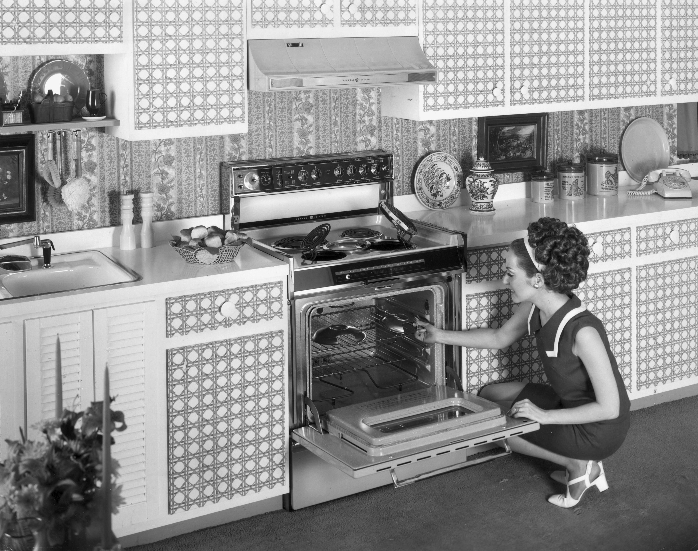
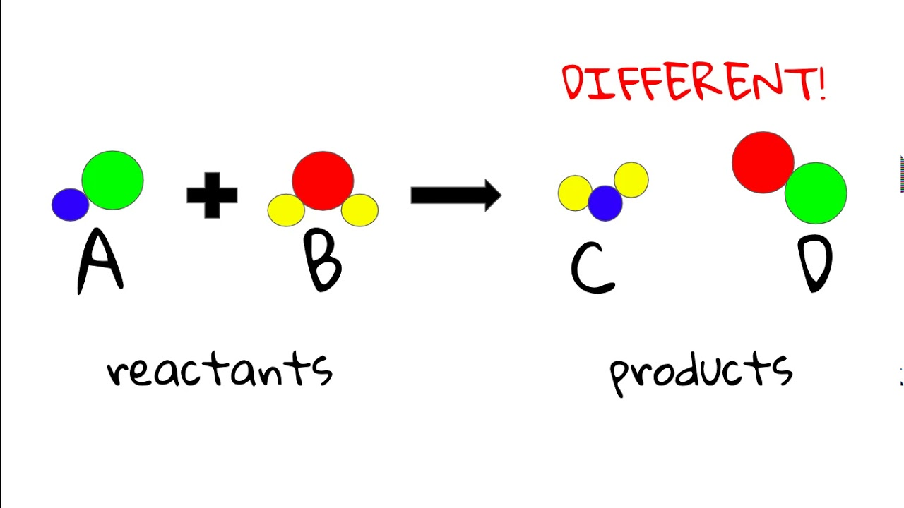

In the 1950s and 1960s, women were confined to the home under the full control of men with societal ideas of traditional gender roles during this period heavily restricted what women could do. In particular, it was overwhelmingly difficult for women to find jobs in male-dominated industries such as the scientific field. Despite these constraints, many women began to challenge and question the restrictive norms, gradually working towards significant changes in society.
Does anyone remember a Mrs. George Fillis -- the woman who had the audacity to tell us she wanted to become a heart surgeon? I have an update. It seems that Mrs. Fillis has not only completed her premed studies in record time but has also been accepted to medical school. Congratulations Mrs. George -- no, I’m sorry -- Marjorie Fillis. We never doubted you for a second
Although Elizabeth Zott was the public figure who encouraged women to take action to combat the gender discrimination, the quote above shows that without the commitment and perseverance of the women, change would have been impossible. The above quote shows an example of a devoted woman who, with the influence of Elizabeth, contradicting the preexisting ideas of gender roles to reach medical school.
The change that Elizabeth Zott helps bring about would not have been possible without the reactants to the reaction, the women who took action with her influence. These women refused to accept the status quo and, motivated by Elizabeth's popularity and credibility, took action to make a difference.